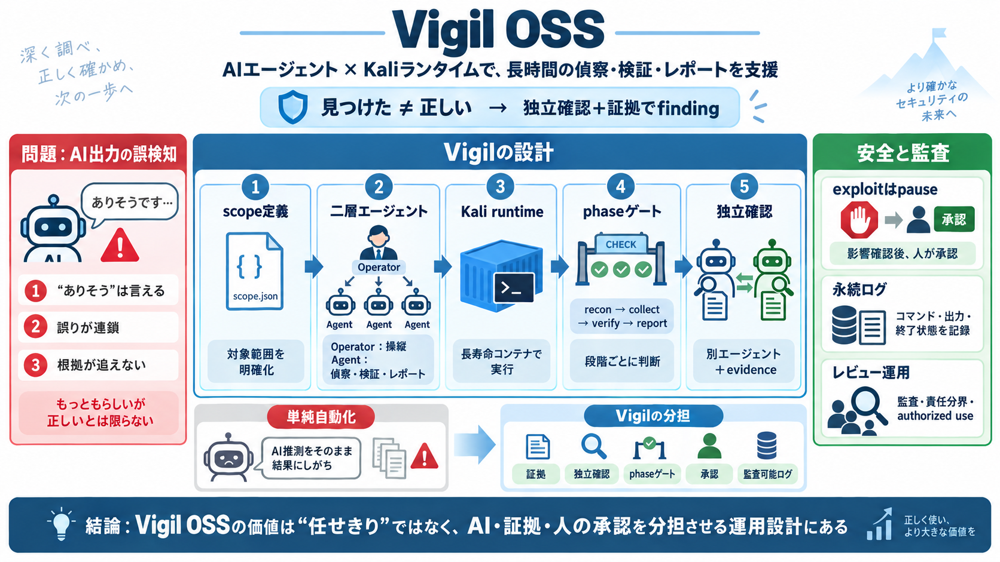

Container Security(2026): 7 Key Components, Risks & Defenses
Though containers offer process-level isolation, they ultimately share the host kernel, making host security a foundatio…

Vigil OSSは、AIエージェントとKaliランタイムを組み合わせ、偵察から検証・レポートまでを長期運用しやすくする仕組みです。重要なのは「見つかった＝正しい」を避ける、独立確認ベースの設計です。
AIは推論で“ありそう”を言えても、誤検知（false positive）も起こり得ます。長時間運用では、誤りが連鎖しやすく、説明責任（何が根拠か）が後から追えなくなります。
Vigilのfindingは「見つけた」では成立しません。別エージェントがエビデンス（証拠）を用いて独立に確認した場合のみ“指摘”として扱われます。
Vigilは起動時にKaliベースの長寿命コンテナを立ち上げ、ターゲット向けのコマンドはコンテナ内で実行される前提です（例：vigil up / runtime start）。
“脆弱性がある”だけで進まず、影響（攻撃チェーン）を結んだ上で、エクスプロイト段階は基本的に人の承認待ち（デフォルトpauseポリシー）になります。
コマンド、プローブ種別、終了ステータス、出力などを耐久データベースに記録し、セッション制約や中断後も状態を維持します。後から監査・追跡できることが価値になります。
独立確認があっても、証拠取得の失敗や解釈のズレで信頼度は変わります。成功はscope、承認、レビュー、ログ監査、そして権限・責任分界（authorized useの前提）に依存します。
Though containers offer process-level isolation, they ultimately share the host kernel, making host security a foundatio…
| Host / Engine | Runtime execution and isolation enforcement. | Infrastructure Compromise: Kernel exploits or container…
For example, issues in the container runtime itself can impact your running containers. CVE-2021-20291 can be exploited …
11. Penligent · CVE-2026-4747 FreeBSD RPCSEC\_GSS Remote Code Execution. penligent.ai/hackinglabs/cve-2026-4747-freebsd-…
For runtime threat detection: Falco detects and alerts on abnormal behavior across hosts, containers, Kubernetes, and cl…